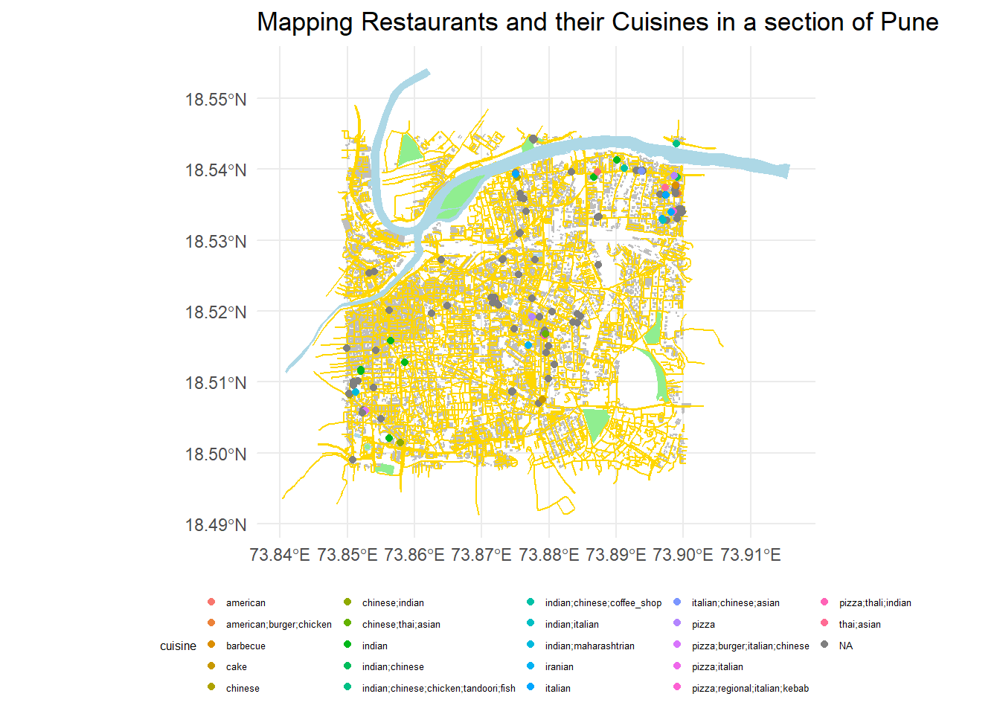

Show me the Code
library(tidyverse)
library(ggformula)
library(sf)
library(sfheaders)
library(osmdata)I am going to draw a map of a section my hometown, Pune and plot the different restaurants in that specific area along with their cuisines.
min max
x 73.84989 73.89981
y 18.49812 18.54456Comments
These points are the minimum and maximum longitudes and latitudes of one section of Pune on which the restaurants are going to be plotted.
Comments
These are to obtain all the natural and man-made features that are going to be plotted on the map using OSM data.
Comments
These are to save the data that we “plucked” using OSM data in order to obtain it for future use and reference.
Reading layer `building_p' from data source
`C:\Users\Ashna Hemmady\Documents\Git_first\posts\Data\gpkg-Data\building_p.gpkg'
using driver `GPKG'
Simple feature collection with 12262 features and 122 fields
Geometry type: POLYGON
Dimension: XY
Bounding box: xmin: 73.84911 ymin: 18.49783 xmax: 73.90109 ymax: 18.54502
Geodetic CRS: WGS 84Reading layer `roads_p' from data source
`C:\Users\Ashna Hemmady\Documents\Git_first\posts\Data\gpkg-Data\roads_p.gpkg'
using driver `GPKG'
Simple feature collection with 5377 features and 91 fields
Geometry type: LINESTRING
Dimension: XY
Bounding box: xmin: 73.84031 ymin: 18.49127 xmax: 73.90588 ymax: 18.54908
Geodetic CRS: WGS 84Reading layer `rivers' from data source
`C:\Users\Ashna Hemmady\Documents\Git_first\posts\Data\gpkg-Data\rivers.gpkg'
using driver `GPKG'
Simple feature collection with 27 features and 11 fields
Geometry type: POLYGON
Dimension: XY
Bounding box: xmin: 73.84074 ymin: 18.50038 xmax: 73.91581 ymax: 18.55424
Geodetic CRS: WGS 84Reading layer `wood' from data source
`C:\Users\Ashna Hemmady\Documents\Git_first\posts\Data\gpkg-Data\wood.gpkg'
using driver `GPKG'
Simple feature collection with 11 features and 9 fields
Geometry type: POLYGON
Dimension: XY
Bounding box: xmin: 73.85263 ymin: 18.49695 xmax: 73.89789 ymax: 18.54495
Geodetic CRS: WGS 84Reading layer `restaurants' from data source
`C:\Users\Ashna Hemmady\Documents\Git_first\posts\Data\gpkg-Data\restaurants.gpkg'
using driver `GPKG'
Simple feature collection with 133 features and 56 fields
Geometry type: POINT
Dimension: XY
Bounding box: xmin: 73.84994 ymin: 18.49905 xmax: 73.89979 ymax: 18.54434
Geodetic CRS: WGS 84Rows: 12,262
Columns: 123
$ osm_id <chr> "52755363", "52755381", "52755445", "5275557…
$ name <chr> "Nehru Memorial Hall", "SGS Mall", "Dorabjee…
$ access <chr> NA, NA, NA, NA, NA, NA, NA, NA, NA, NA, NA, …
$ addr.city <chr> NA, NA, "Pune", NA, NA, NA, NA, NA, NA, NA, …
$ addr.country <chr> NA, NA, NA, NA, NA, NA, NA, NA, NA, NA, NA, …
$ addr.district <chr> NA, NA, NA, NA, NA, NA, NA, NA, NA, NA, NA, …
$ addr.full <chr> NA, NA, NA, NA, NA, NA, NA, NA, NA, NA, NA, …
$ addr.housename <chr> NA, NA, NA, NA, NA, NA, NA, NA, NA, NA, NA, …
$ addr.housenumber <chr> NA, NA, "1-B, Moledina Rd", NA, NA, NA, NA, …
$ addr.neighbourhood <chr> NA, NA, NA, NA, NA, NA, NA, NA, NA, NA, NA, …
$ addr.place <chr> NA, NA, NA, NA, NA, NA, NA, NA, NA, NA, NA, …
$ addr.postcode <chr> NA, NA, "411001", NA, NA, NA, NA, NA, NA, NA…
$ addr.province <chr> NA, NA, NA, NA, NA, NA, NA, NA, NA, NA, NA, …
$ addr.state <chr> NA, NA, NA, NA, NA, NA, NA, NA, NA, NA, NA, …
$ addr.street <chr> NA, NA, "Camp, Pune, Maharashtra 411001, Ind…
$ addr.suburb <chr> NA, NA, NA, NA, NA, NA, NA, NA, NA, NA, NA, …
$ addr.unit <chr> NA, NA, NA, NA, NA, NA, NA, NA, NA, NA, NA, …
$ air_conditioning <chr> NA, NA, NA, NA, NA, NA, NA, NA, NA, NA, NA, …
$ alt_name <chr> NA, NA, NA, NA, NA, NA, NA, NA, NA, NA, NA, …
$ amenity <chr> "theatre", NA, NA, NA, NA, NA, NA, NA, NA, N…
$ architect <chr> NA, NA, NA, NA, NA, NA, NA, NA, NA, NA, NA, …
$ area <chr> NA, NA, NA, NA, NA, NA, NA, NA, NA, NA, NA, …
$ bar <chr> NA, NA, NA, NA, NA, NA, NA, NA, NA, NA, NA, …
$ branch <chr> NA, NA, NA, NA, NA, NA, NA, NA, NA, NA, NA, …
$ brand <chr> NA, NA, NA, NA, NA, NA, NA, NA, NA, NA, NA, …
$ brand.wikidata <chr> NA, NA, NA, NA, NA, NA, NA, NA, NA, NA, NA, …
$ building <chr> "yes", "yes", "yes", "school", "school", "sc…
$ building.colour <chr> NA, NA, NA, NA, NA, NA, NA, NA, NA, NA, NA, …
$ building.flats <chr> NA, NA, NA, NA, NA, NA, NA, NA, NA, NA, NA, …
$ building.levels <chr> NA, NA, NA, NA, NA, NA, NA, NA, NA, NA, NA, …
$ building.material <chr> NA, NA, NA, NA, NA, NA, NA, NA, NA, NA, NA, …
$ bus <chr> NA, NA, NA, NA, NA, NA, NA, NA, NA, NA, NA, …
$ capacity <chr> NA, NA, NA, NA, NA, NA, NA, NA, NA, NA, NA, …
$ capacity.disabled <chr> NA, NA, NA, NA, NA, NA, NA, NA, NA, NA, NA, …
$ changing_table <chr> NA, NA, NA, NA, NA, NA, NA, NA, NA, NA, NA, …
$ check_date <chr> NA, NA, NA, NA, NA, NA, NA, NA, NA, NA, NA, …
$ clothes <chr> NA, NA, NA, NA, NA, NA, NA, NA, NA, NA, NA, …
$ club <chr> NA, NA, NA, NA, NA, NA, NA, NA, NA, NA, NA, …
$ community_centre <chr> NA, NA, NA, NA, NA, NA, NA, NA, NA, NA, NA, …
$ construction <chr> NA, NA, NA, NA, NA, NA, NA, NA, NA, NA, NA, …
$ cuisine <chr> NA, NA, NA, NA, NA, NA, NA, NA, NA, NA, NA, …
$ currency.INR <chr> NA, NA, NA, NA, NA, NA, NA, NA, NA, NA, NA, …
$ denomination <chr> NA, NA, NA, NA, NA, NA, NA, NA, NA, NA, NA, …
$ description <chr> NA, NA, NA, NA, NA, NA, NA, NA, NA, NA, NA, …
$ developer <chr> NA, NA, NA, NA, NA, NA, NA, NA, NA, NA, NA, …
$ diet.local <chr> NA, NA, NA, NA, NA, NA, NA, NA, NA, NA, NA, …
$ diet.non.vegetarian <chr> NA, NA, NA, NA, NA, NA, NA, NA, NA, NA, NA, …
$ email <chr> NA, NA, NA, NA, NA, NA, NA, NA, NA, NA, NA, …
$ emergency <chr> NA, NA, NA, NA, NA, NA, NA, NA, NA, NA, NA, …
$ fee <chr> NA, NA, NA, NA, NA, NA, NA, NA, NA, NA, NA, …
$ female <chr> NA, NA, NA, NA, NA, NA, NA, NA, NA, NA, NA, …
$ government <chr> NA, NA, NA, NA, NA, NA, NA, NA, NA, NA, NA, …
$ healthcare <chr> NA, NA, NA, NA, NA, NA, NA, NA, NA, NA, NA, …
$ healthcare.speciality <chr> NA, NA, NA, NA, NA, NA, NA, NA, NA, NA, NA, …
$ height <chr> NA, NA, NA, NA, NA, NA, NA, NA, NA, NA, NA, …
$ historic <chr> NA, NA, NA, NA, NA, NA, NA, NA, NA, NA, NA, …
$ house <chr> NA, NA, NA, NA, NA, NA, NA, NA, NA, NA, NA, …
$ image <chr> NA, NA, NA, NA, NA, NA, NA, NA, NA, NA, NA, …
$ internet_access <chr> NA, NA, NA, NA, NA, NA, NA, NA, NA, NA, NA, …
$ internet_access.fee <chr> NA, NA, NA, NA, NA, NA, NA, NA, NA, NA, NA, …
$ landuse <chr> NA, NA, NA, NA, NA, NA, NA, NA, NA, NA, NA, …
$ language.de <chr> NA, NA, NA, NA, NA, NA, NA, NA, NA, NA, NA, …
$ layer <chr> NA, NA, NA, NA, NA, NA, NA, NA, NA, NA, NA, …
$ location <chr> NA, NA, NA, NA, NA, NA, NA, NA, NA, NA, NA, …
$ male <chr> NA, NA, NA, NA, NA, NA, NA, NA, NA, NA, NA, …
$ man_made <chr> NA, NA, NA, NA, NA, NA, NA, NA, NA, NA, NA, …
$ min_height <chr> NA, NA, NA, NA, NA, NA, NA, NA, NA, NA, NA, …
$ min_level <chr> NA, NA, NA, NA, NA, NA, NA, NA, NA, NA, NA, …
$ name.en <chr> NA, NA, NA, NA, NA, NA, NA, NA, NA, NA, NA, …
$ name.etymology.wikidata <chr> "Q1047", NA, NA, NA, NA, NA, NA, NA, NA, NA,…
$ name.hi <chr> NA, NA, NA, NA, NA, NA, NA, NA, NA, NA, NA, …
$ name.mr <chr> NA, NA, NA, NA, NA, NA, NA, NA, NA, NA, NA, …
$ network <chr> NA, NA, NA, NA, NA, NA, NA, NA, NA, NA, NA, …
$ office <chr> NA, NA, NA, NA, NA, NA, NA, NA, NA, NA, NA, …
$ official_name <chr> NA, NA, NA, NA, NA, NA, NA, NA, NA, NA, NA, …
$ opening_hours <chr> NA, NA, NA, NA, NA, NA, NA, NA, NA, NA, NA, …
$ opening_hours.covid19 <chr> NA, NA, NA, NA, NA, NA, NA, NA, NA, NA, NA, …
$ operator <chr> NA, NA, NA, NA, NA, NA, NA, NA, NA, NA, NA, …
$ operator.type <chr> NA, NA, NA, NA, NA, NA, NA, NA, NA, NA, NA, …
$ operator.wikidata <chr> NA, NA, NA, NA, NA, NA, NA, NA, NA, NA, NA, …
$ organic <chr> NA, NA, "yes", NA, NA, NA, NA, NA, NA, NA, N…
$ parking <chr> NA, NA, NA, NA, NA, NA, NA, NA, NA, NA, NA, …
$ payment.cards <chr> NA, NA, NA, NA, NA, NA, NA, NA, NA, NA, NA, …
$ payment.cash <chr> NA, NA, NA, NA, NA, NA, NA, NA, NA, NA, NA, …
$ payment.credit_cards <chr> NA, NA, NA, NA, NA, NA, NA, NA, NA, NA, NA, …
$ payment.debit_cards <chr> NA, NA, NA, NA, NA, NA, NA, NA, NA, NA, NA, …
$ payment.electronic_purses <chr> NA, NA, NA, NA, NA, NA, NA, NA, NA, NA, NA, …
$ payment.google_pay <chr> NA, NA, NA, NA, NA, NA, NA, NA, NA, NA, NA, …
$ payment.mastercard <chr> NA, NA, NA, NA, NA, NA, NA, NA, NA, NA, NA, …
$ payment.mobikwik <chr> NA, NA, NA, NA, NA, NA, NA, NA, NA, NA, NA, …
$ payment.notes <chr> NA, NA, NA, NA, NA, NA, NA, NA, NA, NA, NA, …
$ payment.paytm <chr> NA, NA, NA, NA, NA, NA, NA, NA, NA, NA, NA, …
$ payment.phonepe <chr> NA, NA, NA, NA, NA, NA, NA, NA, NA, NA, NA, …
$ phone <chr> NA, NA, NA, NA, NA, NA, NA, NA, NA, NA, NA, …
$ public_transport <chr> NA, NA, NA, NA, NA, NA, NA, NA, NA, NA, NA, …
$ railway <chr> NA, NA, NA, NA, NA, NA, NA, NA, NA, NA, NA, …
$ religion <chr> NA, NA, NA, NA, NA, NA, NA, NA, NA, NA, NA, …
$ reservation <chr> NA, NA, NA, NA, NA, NA, NA, NA, NA, NA, NA, …
$ roof.colour <chr> NA, NA, NA, NA, NA, NA, NA, NA, NA, NA, NA, …
$ roof.levels <chr> NA, NA, NA, NA, NA, NA, NA, NA, NA, NA, NA, …
$ roof.shape <chr> NA, NA, NA, NA, NA, NA, NA, NA, NA, NA, NA, …
$ rooms <chr> NA, NA, NA, NA, NA, NA, NA, NA, NA, NA, NA, …
$ service.bicycle.repair <chr> NA, NA, NA, NA, NA, NA, NA, NA, NA, NA, NA, …
$ service.bicycle.retail <chr> NA, NA, NA, NA, NA, NA, NA, NA, NA, NA, NA, …
$ shop <chr> NA, "mall", "supermarket", NA, NA, NA, NA, N…
$ short_name <chr> NA, NA, NA, NA, NA, NA, NA, NA, NA, NA, NA, …
$ smoking <chr> NA, NA, NA, NA, NA, NA, NA, NA, NA, NA, NA, …
$ source <chr> NA, NA, NA, NA, NA, NA, NA, NA, NA, NA, NA, …
$ start_date <chr> NA, NA, NA, NA, NA, NA, NA, NA, NA, NA, NA, …
$ station <chr> NA, NA, NA, NA, NA, NA, NA, NA, NA, NA, NA, …
$ subway <chr> NA, NA, NA, NA, NA, NA, NA, NA, NA, NA, NA, …
$ surface <chr> NA, NA, NA, NA, NA, NA, NA, NA, NA, NA, NA, …
$ toilets.disposal <chr> NA, NA, NA, NA, NA, NA, NA, NA, NA, NA, NA, …
$ toilets.handwashing <chr> NA, NA, NA, NA, NA, NA, NA, NA, NA, NA, NA, …
$ toilets.position <chr> NA, NA, NA, NA, NA, NA, NA, NA, NA, NA, NA, …
$ tourism <chr> NA, NA, NA, NA, NA, NA, NA, NA, NA, NA, NA, …
$ unisex <chr> NA, NA, NA, NA, NA, NA, NA, NA, NA, NA, NA, …
$ website <chr> NA, NA, "https://dorabjeesonline.com/", NA, …
$ wheelchair <chr> NA, NA, NA, NA, NA, NA, NA, NA, NA, NA, NA, …
$ wikidata <chr> NA, NA, NA, NA, NA, NA, NA, NA, NA, NA, NA, …
$ wikimedia_commons <chr> NA, NA, NA, NA, NA, NA, NA, NA, NA, NA, NA, …
$ wikipedia <chr> NA, NA, NA, NA, NA, NA, NA, NA, NA, NA, NA, …
$ geom <POLYGON [°]> POLYGON ((73.87574 18.51972..., POLY…Rows: 5,377
Columns: 92
$ osm_id <chr> "22840813", "22840815", "22840829", "22840830"…
$ name <chr> NA, NA, "Bajirao Road", "Smita Patil Path", "G…
$ AND.importance_level <chr> NA, NA, NA, NA, NA, NA, NA, NA, NA, NA, NA, NA…
$ abutters <chr> NA, NA, NA, NA, NA, NA, NA, NA, NA, NA, NA, NA…
$ access <chr> NA, NA, NA, NA, NA, NA, NA, NA, NA, NA, NA, NA…
$ access.conditional <chr> NA, NA, NA, NA, NA, NA, NA, NA, NA, NA, NA, NA…
$ addr.city <chr> NA, NA, NA, NA, NA, NA, NA, NA, NA, NA, NA, NA…
$ addr.neighbourhood <chr> NA, NA, NA, NA, NA, NA, NA, NA, NA, NA, NA, NA…
$ addr.postcode <chr> NA, NA, NA, NA, NA, NA, NA, NA, NA, NA, NA, NA…
$ addr.street <chr> NA, NA, NA, NA, NA, NA, NA, NA, NA, NA, NA, NA…
$ alt_name <chr> NA, NA, NA, NA, NA, NA, NA, NA, NA, NA, NA, NA…
$ alt_name.en <chr> NA, NA, NA, NA, NA, NA, NA, NA, NA, NA, NA, NA…
$ alt_name.mr <chr> NA, NA, NA, NA, NA, NA, NA, NA, NA, NA, NA, NA…
$ area <chr> NA, NA, NA, NA, NA, NA, NA, NA, NA, NA, NA, NA…
$ bench <chr> NA, NA, NA, NA, NA, NA, NA, NA, NA, NA, NA, NA…
$ bicycle <chr> NA, NA, NA, NA, NA, NA, NA, NA, NA, NA, NA, NA…
$ brand <chr> NA, NA, NA, NA, NA, NA, NA, NA, NA, NA, NA, NA…
$ brand.pa <chr> NA, NA, NA, NA, NA, NA, NA, NA, NA, NA, NA, NA…
$ brand.ur <chr> NA, NA, NA, NA, NA, NA, NA, NA, NA, NA, NA, NA…
$ brand.wikidata <chr> NA, NA, NA, NA, NA, NA, NA, NA, NA, NA, NA, NA…
$ brand.wikipedia <chr> NA, NA, NA, NA, NA, NA, NA, NA, NA, NA, NA, NA…
$ bridge <chr> NA, NA, NA, NA, NA, NA, NA, NA, NA, NA, NA, NA…
$ bridge.structure <chr> NA, NA, NA, NA, NA, NA, NA, NA, NA, NA, NA, NA…
$ bus <chr> NA, NA, NA, NA, NA, NA, NA, NA, NA, NA, NA, NA…
$ bus.lanes <chr> NA, NA, NA, NA, NA, NA, NA, NA, NA, NA, NA, NA…
$ busway <chr> NA, NA, NA, NA, NA, NA, NA, NA, NA, NA, NA, NA…
$ covered <chr> NA, NA, NA, NA, NA, NA, NA, NA, NA, NA, NA, NA…
$ crossing <chr> NA, NA, NA, NA, NA, NA, NA, NA, NA, NA, NA, NA…
$ crossing.markings <chr> NA, NA, NA, NA, NA, NA, NA, NA, NA, NA, NA, NA…
$ cutting <chr> NA, NA, NA, NA, NA, NA, NA, NA, NA, NA, NA, NA…
$ cycleway <chr> NA, NA, NA, NA, NA, NA, NA, NA, NA, NA, NA, NA…
$ description <chr> NA, NA, NA, NA, NA, NA, NA, NA, NA, NA, NA, NA…
$ direction <chr> NA, NA, NA, NA, NA, NA, NA, NA, NA, NA, NA, NA…
$ dog <chr> NA, NA, NA, NA, NA, NA, NA, NA, NA, NA, NA, NA…
$ embankment <chr> NA, NA, NA, NA, NA, NA, NA, NA, NA, NA, NA, NA…
$ est_width <chr> NA, NA, NA, NA, NA, NA, NA, NA, NA, NA, NA, NA…
$ foot <chr> NA, NA, NA, NA, NA, NA, NA, NA, NA, NA, NA, NA…
$ footway <chr> NA, NA, NA, NA, NA, NA, NA, NA, NA, NA, NA, NA…
$ ford <chr> NA, NA, NA, NA, NA, NA, NA, NA, NA, NA, NA, NA…
$ handrail <chr> NA, NA, NA, NA, NA, NA, NA, NA, NA, NA, NA, NA…
$ height <chr> NA, NA, NA, NA, NA, NA, NA, NA, NA, NA, NA, NA…
$ hgv <chr> NA, NA, NA, NA, NA, NA, NA, NA, NA, NA, NA, NA…
$ highway <chr> "secondary", "residential", "trunk", "secondar…
$ horse <chr> NA, NA, NA, NA, NA, NA, NA, NA, NA, NA, NA, NA…
$ incline <chr> NA, NA, NA, NA, NA, NA, NA, NA, NA, NA, NA, NA…
$ indoor <chr> NA, NA, NA, NA, NA, NA, NA, NA, NA, NA, NA, NA…
$ junction <chr> NA, NA, NA, NA, NA, NA, NA, NA, NA, NA, NA, NA…
$ lane_markings <chr> NA, NA, NA, NA, NA, NA, NA, NA, NA, NA, NA, NA…
$ lanes <chr> NA, NA, NA, NA, NA, NA, "2", NA, NA, NA, NA, N…
$ layer <chr> NA, NA, NA, NA, NA, NA, NA, NA, NA, NA, NA, NA…
$ level <chr> NA, NA, NA, NA, NA, NA, NA, NA, NA, NA, NA, NA…
$ lit <chr> NA, NA, NA, NA, NA, NA, NA, NA, NA, NA, NA, NA…
$ loc_name <chr> NA, NA, NA, NA, NA, NA, NA, NA, NA, NA, NA, NA…
$ loc_name.mr <chr> NA, NA, NA, NA, NA, NA, NA, NA, NA, NA, NA, NA…
$ locked <chr> NA, NA, NA, NA, NA, NA, NA, NA, NA, NA, NA, NA…
$ maxaxleload <chr> NA, NA, NA, NA, NA, NA, NA, NA, NA, NA, NA, NA…
$ maxheight <chr> NA, NA, NA, NA, NA, NA, NA, NA, NA, NA, NA, NA…
$ maxspeed <chr> NA, NA, NA, NA, "30", NA, NA, NA, NA, NA, NA, …
$ min_height <chr> NA, NA, NA, NA, NA, NA, NA, NA, NA, NA, NA, NA…
$ motor_vehicle <chr> NA, NA, NA, NA, NA, NA, NA, NA, NA, NA, NA, NA…
$ motorcar <chr> NA, NA, NA, NA, NA, NA, NA, NA, NA, NA, NA, NA…
$ motorcycle <chr> NA, NA, NA, NA, NA, NA, NA, NA, NA, NA, NA, NA…
$ name.en <chr> NA, NA, NA, NA, NA, NA, NA, NA, NA, NA, NA, NA…
$ name.etymology.wikidata <chr> NA, NA, "Q2514706", NA, "Q4802144", NA, NA, NA…
$ name.mr <chr> NA, NA, "बाजीराव रस्ता", "स्मिता पाटील पथ", "जनरल वैद्य मार्ग", …
$ name.ne <chr> NA, NA, NA, NA, NA, NA, NA, NA, NA, NA, NA, NA…
$ name.pa <chr> NA, NA, NA, NA, NA, NA, NA, NA, NA, NA, NA, NA…
$ name.ur <chr> NA, NA, NA, NA, NA, NA, NA, NA, NA, NA, NA, NA…
$ official_name <chr> NA, NA, NA, NA, NA, NA, NA, NA, NA, NA, NA, NA…
$ oneway <chr> "yes", "no", "yes", "yes", NA, "no", "yes", NA…
$ opening_date <chr> NA, NA, NA, NA, NA, NA, NA, NA, NA, NA, NA, NA…
$ postal_code <chr> NA, NA, NA, NA, NA, NA, NA, NA, NA, NA, NA, NA…
$ psv <chr> NA, NA, NA, NA, NA, NA, NA, NA, NA, NA, NA, NA…
$ public_transport <chr> NA, NA, NA, NA, NA, NA, NA, NA, NA, NA, NA, NA…
$ ref <chr> NA, NA, "NH60;NH65", NA, NA, NA, NA, NA, NA, N…
$ ref.new <chr> NA, NA, NA, NA, NA, NA, NA, NA, NA, NA, NA, NA…
$ ref.old <chr> NA, NA, NA, NA, NA, NA, NA, NA, NA, NA, NA, NA…
$ route <chr> NA, NA, NA, NA, NA, NA, NA, NA, NA, NA, NA, NA…
$ service <chr> NA, NA, NA, NA, NA, NA, NA, NA, NA, NA, NA, NA…
$ shelter <chr> NA, NA, NA, NA, NA, NA, NA, NA, NA, NA, NA, NA…
$ shoulder <chr> NA, NA, NA, NA, NA, NA, NA, NA, NA, NA, NA, NA…
$ sidewalk <chr> NA, NA, NA, NA, NA, NA, NA, NA, NA, NA, NA, NA…
$ source <chr> NA, NA, NA, NA, NA, NA, NA, NA, NA, NA, NA, NA…
$ step_count <chr> NA, NA, NA, NA, NA, NA, NA, NA, NA, NA, NA, NA…
$ surface <chr> NA, NA, NA, NA, NA, NA, "asphalt", NA, NA, NA,…
$ tactile_paving <chr> NA, NA, NA, NA, NA, NA, NA, NA, NA, NA, NA, NA…
$ toll <chr> NA, NA, NA, NA, NA, NA, NA, NA, NA, NA, NA, NA…
$ tunnel <chr> NA, NA, NA, NA, NA, NA, NA, NA, NA, NA, NA, NA…
$ wheelchair <chr> NA, NA, NA, NA, NA, NA, NA, NA, NA, NA, NA, NA…
$ width <chr> NA, NA, NA, NA, NA, NA, NA, NA, NA, NA, NA, NA…
$ wikidata <chr> NA, NA, NA, NA, NA, NA, NA, NA, NA, NA, NA, NA…
$ geom <LINESTRING [°]> LINESTRING (73.85801 18.524..., LIN…Rows: 27
Columns: 12
$ osm_id <chr> "61458970", "197954187", "206255000", "206255001", "2…
$ name <chr> NA, NA, NA, NA, "Mula-Mutha River", NA, NA, "Peshve U…
$ addr.city <chr> NA, NA, NA, NA, NA, NA, NA, NA, NA, NA, NA, "Pune", N…
$ addr.postcode <chr> NA, NA, NA, NA, NA, NA, NA, NA, NA, NA, NA, "411001",…
$ addr.street.name <chr> NA, NA, NA, NA, NA, NA, NA, NA, NA, NA, NA, "Wellesly…
$ landuse <chr> NA, NA, NA, NA, NA, NA, NA, NA, NA, NA, NA, NA, NA, N…
$ min_height <chr> NA, NA, NA, NA, NA, NA, NA, NA, NA, NA, NA, NA, NA, N…
$ name.mr <chr> NA, NA, NA, NA, "मुळा-मुठा नदी", NA, NA, "पेशवे उद्यान तलाव", NA…
$ natural <chr> "wood", "wood", NA, "water", "water", "water", NA, "w…
$ place <chr> "islet", "islet", NA, NA, NA, NA, NA, NA, NA, NA, NA,…
$ water <chr> NA, NA, NA, "river", "river", "river", NA, NA, NA, NA…
$ geom <POLYGON [°]> POLYGON ((73.86409 18.53497..., POLYGON ((73.…Rows: 11
Columns: 10
$ osm_id <chr> "61458970", "197954187", "207899908", "207899978", "9622503…
$ name <chr> NA, NA, "Talyatala Ganapati", NA, NA, NA, "forest", NA, NA,…
$ amenity <chr> NA, NA, "place_of_worship", NA, NA, NA, NA, NA, NA, NA, NA
$ leaf_cycle <chr> NA, NA, NA, NA, NA, NA, "evergreen", NA, NA, NA, NA
$ leaf_type <chr> NA, NA, NA, NA, NA, NA, "mixed", NA, NA, NA, NA
$ name.mr <chr> NA, NA, "तळ्यातला गणपती", NA, NA, NA, NA, NA, NA, NA, NA
$ natural <chr> "wood", "wood", NA, NA, "wood", "wood", "wood", "wood", "wo…
$ place <chr> "islet", "islet", NA, NA, NA, NA, NA, NA, NA, NA, NA
$ religion <chr> NA, NA, "hindu", NA, NA, NA, NA, NA, NA, NA, NA
$ geom <POLYGON [°]> POLYGON ((73.86409 18.53497..., POLYGON ((73.86322 18.53309…Rows: 133
Columns: 57
$ osm_id <chr> "283163978", "283166314", "518295335", "51864…
$ name <chr> "The Charcoal Pit", "The Great Punjab", "Le P…
$ addr.city <chr> NA, NA, NA, "Pune", "Pune", "Pune", NA, NA, N…
$ addr.country <chr> NA, NA, NA, "IN", "IN", "IN", NA, NA, NA, NA,…
$ addr.district <chr> NA, NA, NA, NA, NA, NA, NA, NA, NA, NA, NA, N…
$ addr.floor <chr> NA, NA, NA, NA, NA, NA, NA, NA, NA, NA, NA, N…
$ addr.housename <chr> NA, NA, NA, NA, NA, NA, NA, NA, NA, NA, NA, N…
$ addr.housenumber <chr> NA, NA, NA, NA, NA, "Virwani Plaza 11", NA, N…
$ addr.postcode <chr> NA, NA, NA, "411001", "411001", "411001", NA,…
$ addr.state <chr> NA, NA, NA, "MH", "Maharashtra", "Maharashtra…
$ addr.street <chr> NA, NA, NA, "Boat Club Road", "East Street", …
$ addr.suburb <chr> NA, NA, NA, NA, NA, NA, NA, NA, NA, NA, NA, N…
$ address <chr> "5 M. G. Road", NA, NA, NA, NA, NA, NA, NA, N…
$ air_conditioning <chr> NA, NA, NA, NA, NA, NA, NA, NA, NA, NA, NA, N…
$ amenity <chr> "restaurant", "restaurant", "restaurant", "re…
$ bar <chr> NA, "yes", NA, NA, NA, NA, NA, NA, NA, NA, NA…
$ branch <chr> NA, NA, NA, NA, NA, NA, NA, NA, NA, NA, NA, N…
$ brand <chr> NA, NA, NA, NA, NA, NA, NA, NA, NA, NA, NA, N…
$ brand.wikidata <chr> NA, NA, NA, NA, NA, NA, NA, NA, NA, NA, NA, N…
$ brand.wikipedia <chr> NA, NA, NA, NA, NA, NA, NA, NA, NA, NA, NA, N…
$ check_date <chr> NA, NA, NA, NA, NA, NA, NA, NA, NA, NA, NA, N…
$ check_date.opening_hours <chr> NA, NA, NA, NA, NA, NA, NA, NA, NA, NA, NA, N…
$ contact.email <chr> NA, NA, NA, NA, NA, NA, NA, NA, NA, NA, NA, N…
$ contact.mobile <chr> NA, NA, NA, NA, NA, NA, NA, NA, NA, NA, NA, N…
$ contact.phone <chr> NA, NA, NA, NA, NA, NA, NA, NA, NA, NA, NA, N…
$ contact.website <chr> NA, NA, NA, NA, NA, NA, NA, NA, NA, NA, NA, N…
$ cuisine <chr> NA, "indian", NA, "chinese", NA, NA, NA, NA, …
$ description <chr> NA, NA, NA, NA, NA, NA, NA, NA, NA, NA, NA, N…
$ diet.chicken <chr> NA, NA, NA, NA, NA, NA, NA, NA, NA, NA, NA, N…
$ diet.fish <chr> NA, NA, NA, NA, NA, NA, NA, NA, NA, NA, NA, N…
$ diet.halal <chr> NA, NA, NA, NA, NA, NA, NA, NA, NA, NA, NA, N…
$ diet.jain <chr> NA, NA, NA, NA, NA, NA, NA, NA, NA, NA, NA, N…
$ diet.lacto_vegetarian <chr> NA, NA, NA, NA, NA, NA, NA, NA, NA, NA, NA, N…
$ diet.non.vegetarian <chr> NA, NA, NA, NA, NA, NA, NA, NA, NA, NA, NA, N…
$ diet.seafood <chr> NA, NA, NA, NA, NA, NA, NA, NA, NA, NA, NA, N…
$ diet.vegan <chr> NA, NA, NA, NA, NA, NA, NA, NA, NA, NA, NA, N…
$ diet.vegetarian <chr> NA, NA, NA, NA, NA, NA, NA, NA, NA, NA, NA, N…
$ drive_in <chr> NA, NA, NA, "no", NA, NA, NA, NA, NA, NA, NA,…
$ fixme <chr> NA, NA, NA, NA, NA, NA, NA, NA, NA, NA, NA, N…
$ highchair <chr> NA, NA, NA, NA, NA, NA, NA, NA, NA, NA, NA, N…
$ internet_access <chr> NA, NA, NA, "no", "no", "no", NA, NA, NA, NA,…
$ internet_access.fee <chr> NA, NA, NA, NA, NA, NA, NA, NA, NA, NA, NA, N…
$ level <chr> NA, NA, NA, NA, NA, NA, NA, NA, NA, NA, NA, N…
$ microbrewery <chr> NA, NA, NA, "no", NA, NA, NA, NA, NA, NA, NA,…
$ name.en <chr> NA, NA, NA, NA, NA, NA, NA, NA, NA, NA, NA, N…
$ name.mr <chr> NA, NA, NA, "मेनलँड चायना", NA, NA, NA, NA, NA, N…
$ opening_hours <chr> NA, NA, NA, NA, NA, NA, NA, NA, NA, NA, NA, N…
$ outdoor_seating <chr> NA, NA, NA, "no", "no", "yes", NA, NA, NA, NA…
$ payment.cash <chr> NA, NA, NA, NA, NA, NA, NA, NA, NA, NA, NA, N…
$ payment.upi <chr> NA, NA, NA, NA, NA, NA, NA, NA, NA, NA, NA, N…
$ phone <chr> NA, NA, NA, "+91 20 66013030", "+91 20 263431…
$ ramp <chr> NA, "yes", NA, NA, NA, NA, NA, NA, NA, NA, NA…
$ smoking <chr> NA, NA, NA, "no", "no", "yes", NA, NA, NA, NA…
$ takeaway <chr> NA, NA, NA, "yes", "yes", "yes", NA, NA, NA, …
$ website <chr> NA, NA, NA, "www.mainlandchina.com", "1000oak…
$ wheelchair <chr> NA, NA, NA, "no", NA, NA, NA, NA, NA, NA, NA,…
$ geom <POINT [°]> POINT (73.87914 18.51679), POINT (73.89…gf_sf(data = buildings_pune, geometry = ~ geom, colour = "grey", fill = "grey") %>%
gf_sf(data = roads_pune, geometry = ~ geom, color = "gold", fill = "gold") %>%
gf_sf(data = rivers_p, geometry = ~ geom, color = "lightblue", fill = "lightblue") %>%
gf_sf(data = wood, geometry = ~ geom, color = "lightgreen", fill = "lightgreen") %>%
gf_sf(data = restaurants_p, geometry = ~ geom, color = ~cuisine, fill = ~cuisine) %>%
gf_labs(title = "Mapping Restaurants and their Cuisines in a section of Pune") %>%
gf_theme(theme = theme_minimal()) %>%
gf_theme(
legend.text = element_text(size = 5),
legend.title = element_text(size = 6),
legend.key.size = unit(0.004, "cm"),
legend.position ="bottom"
)
Comments
The grey areas are buildings, green areas are tree covered regions, yellow lines are roads, blue lines indicate rivers and the coloured or grey points are restaurants. There are quite a few restaurants clustered at the centre (18.52N, 73.87E), top right (between 18.53N, 73.90E and 18.54N, 73.90E) and towards the bottom left (18.51N, 73.85E) of the map. This suggests that those might be busy areas, maybe even commercial or at least where there is quite some activity of people. There is a wide variety of cuisines identified showing that Pune’s food is diverse. Apart from Indian food, there seems to be a strong liking for Chinese among the people based on the number of restaurants serving Chinese. Italian food also seems to be popular, along with Thai and Asian. There are also a presence of American food. There are only a few restaurants along the river and around the tree areas, suggesting there might be only a few to no people living there. The restaurants are closer to the roads and buildings, that is, they are placed mostly near urban areas.